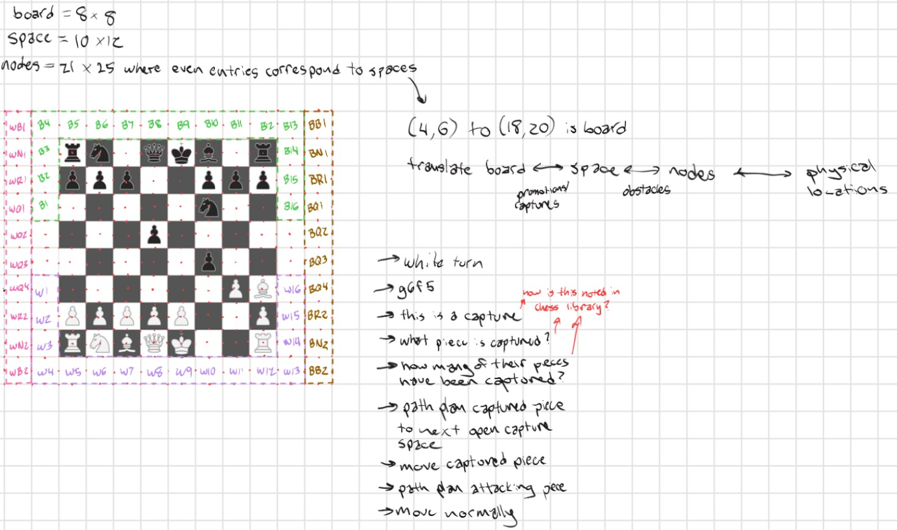
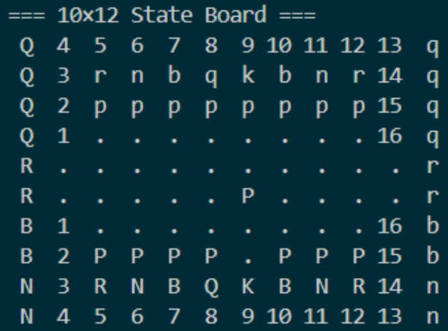
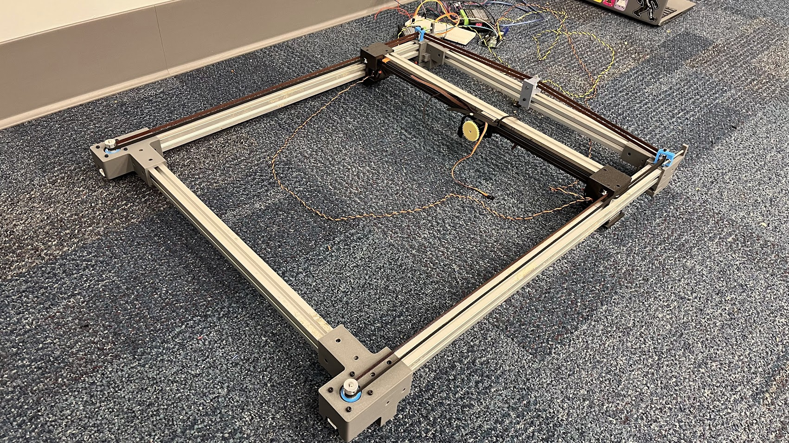
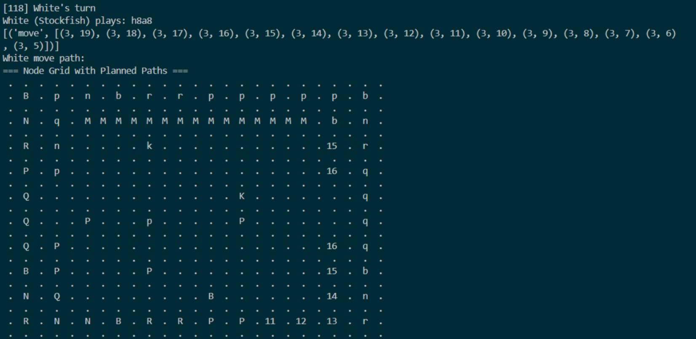
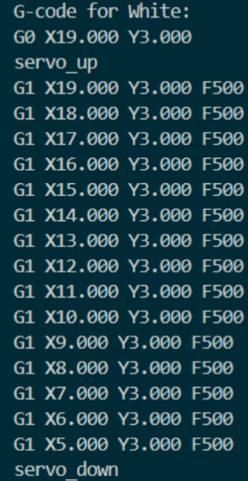
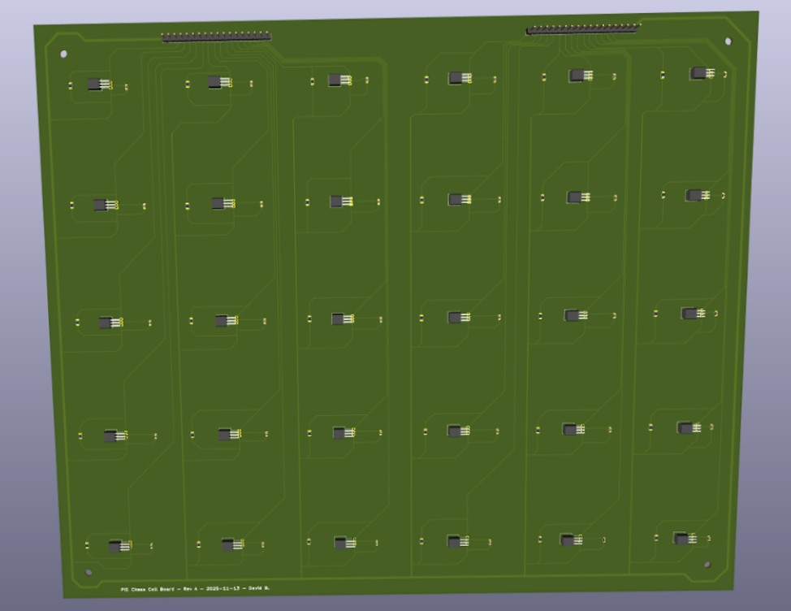
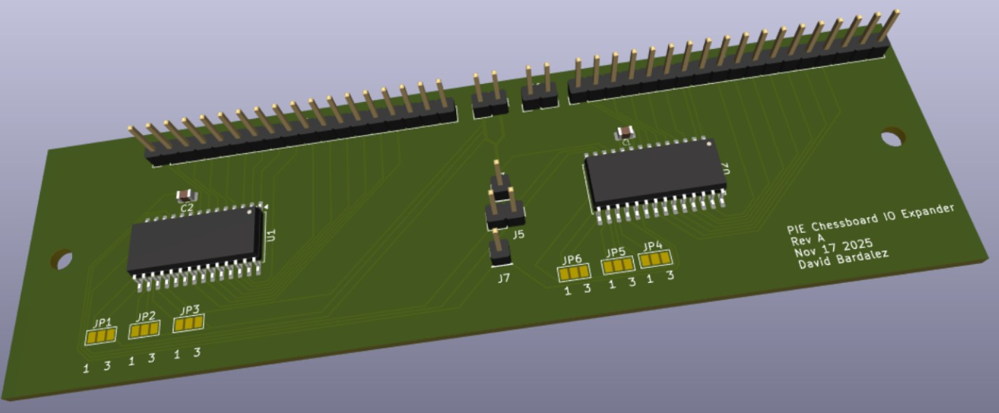

Sprint 1
In this sprint, we aimed to validate our idea and implementation by running several mechanical, electrical, and software tests. Mechanically, our goal for Sprint 1 was to prototype a 3-by-3 array of Hall Effect sensors in a 3D print. The goal was to test the functionality of the sensors and ensure that we could work on our stretch goal simultaneously. At the same time, we were researching different gantries and their specific use cases, as well as their flaws, and had a rough design idea. For software, we focused on the internal tracking and interpretation of the board. We selected the Python Chess library and Stockfish engine for our gameplay, and designed 3 board representations that could track the digital game, track the physical board, and plan paths for the gantry to follow. Since the gantry didn’t exist during this sprint, we created a digital simulation of moves that would occur on the physical board.
Initial Visual Sketch of our Project

Initial gantry CAD

Initial ideas for physical board setup and software interpretation of the board state
Software representations of the board and game
Our goal for the next sprint was to have a full chessboard gantry system built, to test the computer versus computer algorithm.
Sprint 2
We settled on a gantry design and modified it to suit our specific needs. We also built our designed gantry and tested the A large focus during this time was on the path planning for each move. When the gantry was still not prepared, we used the simulation code to plot how moves would occur and debugged the order of operations for each kind of move and edge case. Generating G-code from these planned move sequences was quite simple since one node of movement corresponded to one inch on the board. Once the gantry was ready, we calibrated it to move the correct distance for a given input, and practiced drawing basic shapes to validate our work. Besides the gantry, we also spent a significant amount of time planning how to handle edge-case moves like castling and promotions, and integrating these into the path planning and G-code functions. During this time, the Raspberry Pi was also configured with the repository, and we confirmed communication between both of our microcontrollers.
Path planning example
G-code generation
We also ordered all of our PCBs, as can be seen below
 For our next sprint goal, we wanted to have a computer versus computer game and add the PCB to have computer versus human gameplay capabilities, where the human could physically move the pieces.
Sprint 3
For sprint 3, we met our goal for the project of having a board that plays computer versus computer chess. By mounting the board on top of the gantry, printing and assembling the end-effector, and printing all the pieces, we were able to conduct games on the physical board. To get the software ready, we created a turn-based game loop for the physical board, ensured correct end-effector servo control, and debugged all G-code-related functions. For the next sprint, we aimed to get a board reset function done and to solder and mount our PCBs to achieve our stretch goal of detecting human movement and having a human versus computer chess. We were able to get promotions and castling working during this sprint, but were still working through how to handle en passant captures. Additionally, we began attempting diagonal movement, but ran into lots of interference issues with pieces bumping into each other with “corner-cutting” movement.

Freshly Laser Cut Board

David soldering the Hall-effect sensor PCB
Pre-Demo Day Sprint
In preparation for Demo Day, we focused on refining the existing functionality and then moving on to our stretch goal of physical human movement interpretation. To polish the board, we designed and added side panels, trimmed the board down, added and painted a frame around the rastered portion of the board, and covered all exposed screwheads to be as sleek as possible. On the electrical side, we added a surge protector to the board and plugged in all power supplies, so only a single outlet was necessary to power the board. Additionally, we added two turn indicator LEDs to show which player was currently moving, as it was occasionally difficult to tell when a computer move was completed. For software, we solved diagonal movement to make piece movement more realistic, and added a constraint to prevent corner cutting around occupied squares. Additionally, we finalized a board reset function that occurs when a game is complete, allowing users to simply press a button and exit the game when they are done. By the end of this sprint, all moves, including captures, promotions, castling, and en passant, were all possible, and a seamless game loop with configuration after each round was complete for demo day.
Pre-Demo Day Board Functionality Highlights
An example of castling that avoids diagonal "corner-cutting" interference
An example of a knight moving smoothly between other pieces with selective diagonal movement
Our Demo Day-level product full game demonstration can be found at the top of the gallery page. A sneak peak of the demo is shown below.